BÀI TẬP 1 · QUẢN LÝ TỆP
Thiết kế cấu trúc lưu trữ và quy tắc đặt tên
Thực hành các thao tác cơ bản trên Windows File Explorer để thiết lập một hệ thống quản lý dữ liệu số khoa học, ngăn nắp.
Cách tổ chức dữ liệu khoa học
- Thư mục gốc:
ThucHanh_NgoDuyAnhlàm gốc để gom toàn bộ dữ liệu môn học. - Thư mục con:
TaiLieuphân tách tài liệu thực hành riêng biệt, tránh nhầm lẫn. - Tên tệp rõ nghĩa:
GhiChuQuanTrong.txt,DiChuyen.txt. - Quy tắc ưu tiên: Đặt tên không dấu, ngắn gọn, dùng gạch dưới hoặc PascalCase, dễ dàng tìm kiếm và chia sẻ qua mạng.
Mục tiêu bài học
Làm chủ các thao tác: tạo mới, đổi tên, sao chép, di chuyển, xóa, khôi phục từ Recycle Bin và xóa vĩnh viễn tệp/thư mục.
Quy trình làm việc
Lập sơ đồ thư mục trước khi thực hiện thao tác vật lý trên máy tính để tránh nhầm lẫn dữ liệu.
Bằng chứng thực hiện
12 ảnh chụp màn hình ghi lại từng bước thao tác thực tế trong Windows File Explorer.
Kết quả đạt được
Tạo thói quen sắp xếp tài liệu khoa học giúp rút ngắn 80% thời gian tìm kiếm tệp tin sau này.
Sơ đồ logic cây thư mục
ThucHanh_NgoDuyAnh
01_TienDo_Trello
02_Docs_BaoCao
03_PDF_BaiTap
04_AnhMinhChung
Thư viện ảnh minh chứng (Click vào ảnh để phóng to)
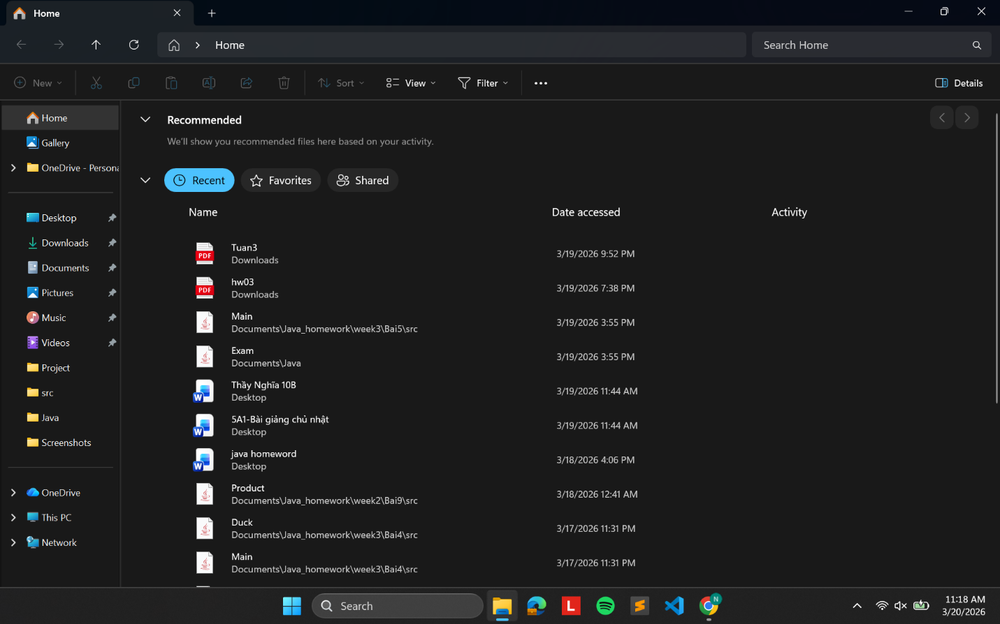
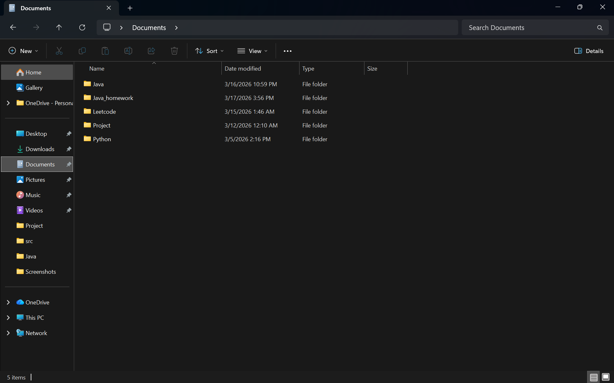
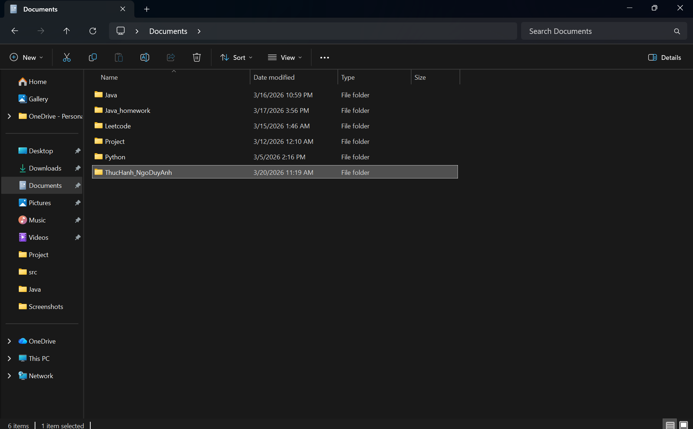
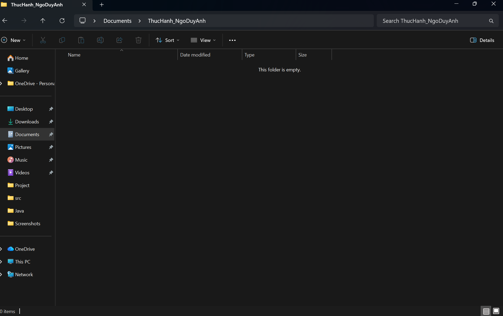
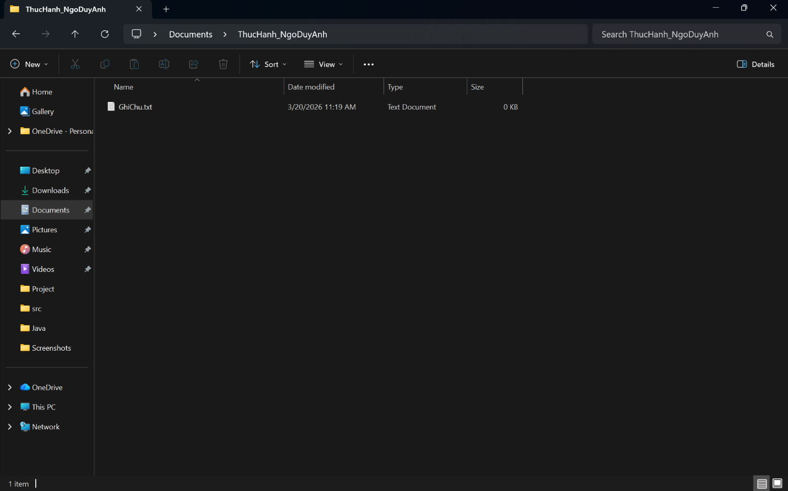
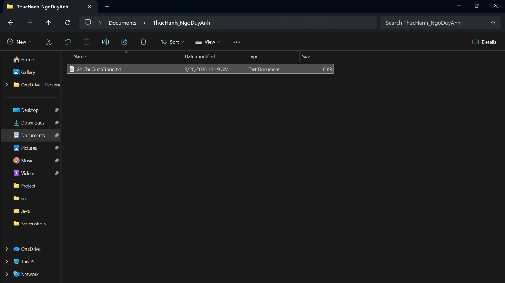
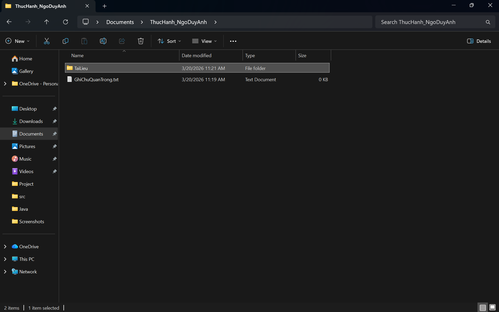
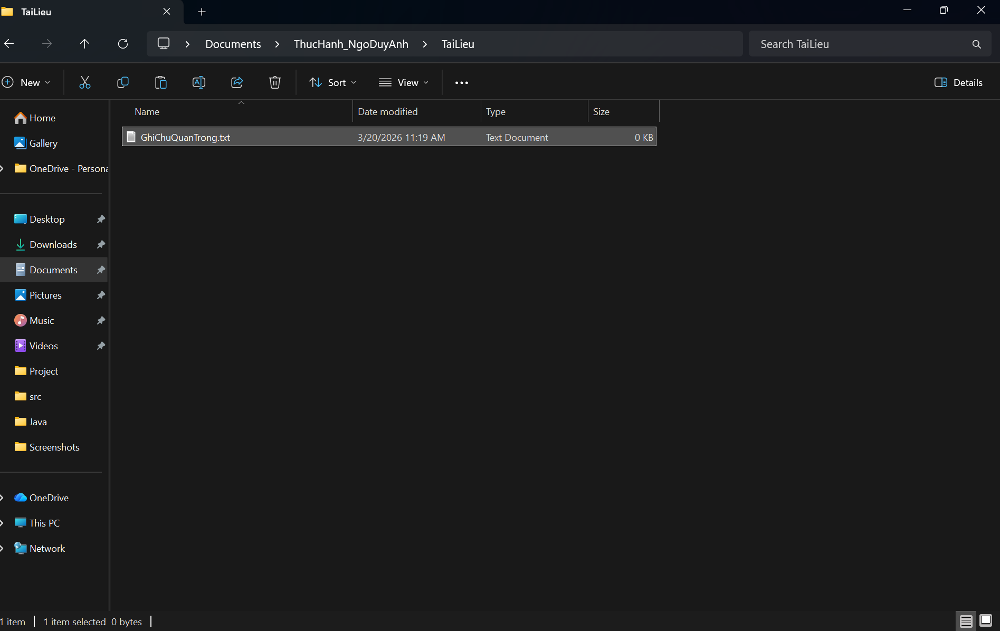
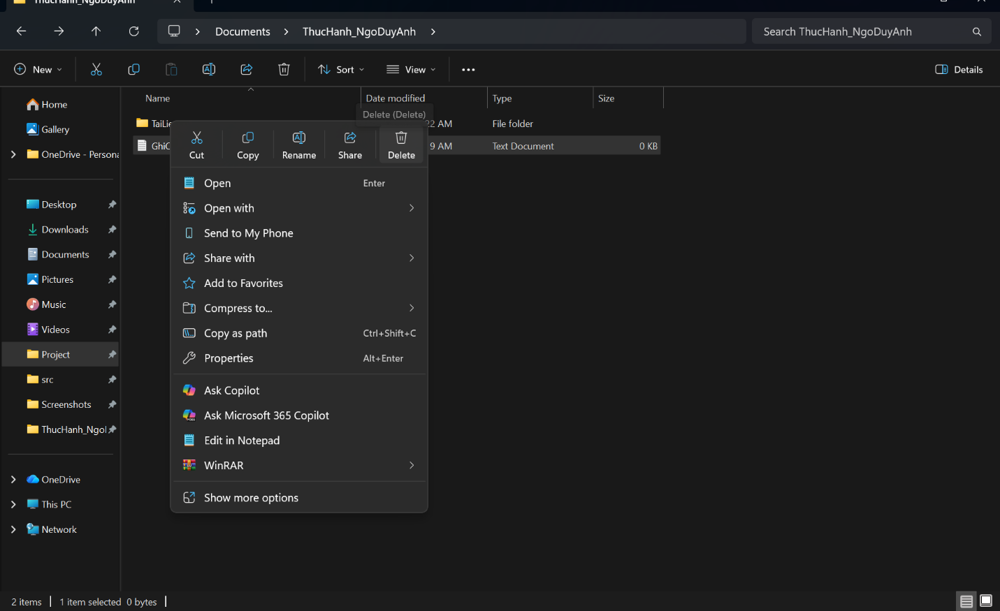
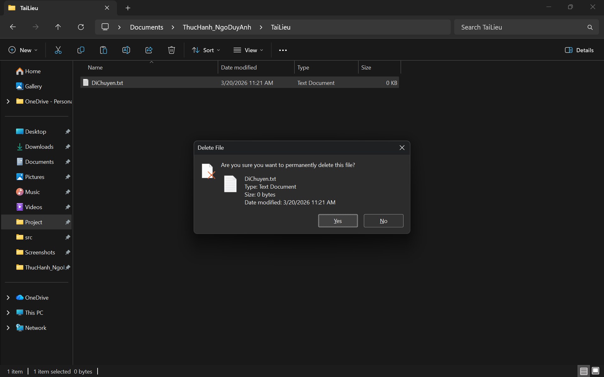

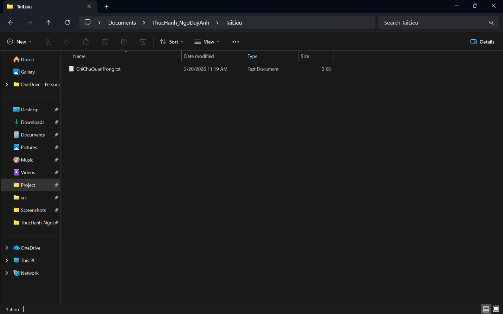